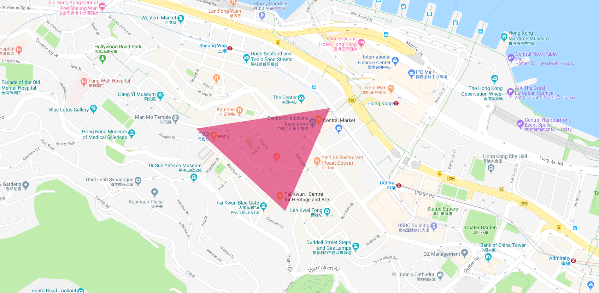

What is the Smart Cultural Triangle Precinct?
The SCTP is the area between the Central Market, Tai Kwun (former Central Police Station complex), and PMQ (former Police Married Quarters) in the Central District of Hong Kong. The Institute for Sustainable Urbanisation (ISU) started the SCTP project in 2008 as an area-based conservation project aimed at preserving the historic and cultural heritage of this unique region.
Numerous conservation efforts have already take place in the area, including the preservation of the Tai Kwun and PMQ. The Central Market's revitalization plan is still in progress, and it aims to be completed by 2020.
Historic Sites
Cultural Triangle Location
The cultural triangle is located conveniently in the Central district, on Hong Kong Island. All three sites are within a ten minute walk of each other, and the area is bisected by the scenic Central–Mid-Levels escalator. The Central Market is a quick five minute walk from Central Station west along Des Veoux Road Central.
The SCTP is also bisected by the Central–Mid-Levels escalator, the longest outdoor covered escalator system in the world. This transport system/tourist attraction is lined with shops, restaurants, and markets, making it a nexus of Hong Kong culture.
About this Website
This site was made by a group of students from Worcester Polytechnic Institute who worked with the ISU to further the preservation, development, and promotion of the SCTP.
If you have comments or questions about this site, please contact Joseph Petitti at jppetitti@wpi.edu.